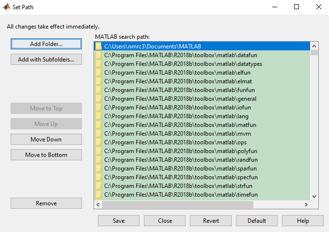

Installation¶
Contents
Important
Please installed the following toolboxes before using NWB standardized processing codes.
NWB Standardization Codes Installation¶
Download and unzip the NMRCNWBStandardization codes.
Change the folder name ‘NMRCNWBStandardization-master’ to ‘NMRCNWBStandardization’.
MatNWB Toolbox Installation¶
MatNWB is the Matlab interface for reading and writing NWB file. To generate and use NWB structure, MatNWB should be inside the folder /toolbox/.
Download matnwb-0.2.1.zip from MatNWB github and unzip the downloaded matnwb-0.2.1.zip.
Change the folder name ‘matnwb-0.2.1’ to ‘matnwb’
From the Matlab command line inside ‘matnwb’ folder, run the following code to generate matlab m-files
generateCore('schema/core/nwb.namespace.yaml');
Copy the folder matnwb into folder NMRCNWBStandardization/toolbox/
Tekscan Data Reader SDK Installation¶
Tekscan Data Reader SDK is an application programming interface (API) that is required to read the data of Tekscan .FSX files in Matlab. The SDK can used be used in Windows as it requires .NET assemblies.
Download the Tekscan Data Reader SDK in the network server root2/yll/GaitmatSDK/Data_Reader_Toolkit_2.2_44901.zip and unzip it
Double click the ‘setup.exe’ inside the folder and follow the wizard to finish the installation.
Copy the testcodes folder in the network server root2/yll/GaitmatSDK/testcodes to your local machine. Run the testcode.m in matlab. A figure similar to the following one will be generated if the installation is successful.

If the testcodes can not run succesfully, please remove and install the SDK!! (I don’t exactly konw why, but just found this method worked several times).
Add Path¶
add ‘NMRCNWBStandardization’ folder and its subfolders into matlab using either of the following two methods.
On the Home tab, in the Environment section, click Set Path. Then click ‘Add with Subfolders’ in the ‘Set Path’ dialog box.
Then select the ‘NMRCNWBStandardization’ folder and ‘Select Folder’ button in the ‘Add to Path with Subfolders’ dialog box. Finally click ‘Save’ in the ‘Set Path’ dialog box. Please refer to matlab website if needed.

Run the following matlab codes, please change ‘path/to/NWB Standardization Code’ to your actual NMRCNWBStandardization path:
addpath(genpath('path/to/NMRCNWBStandardization')) savepath